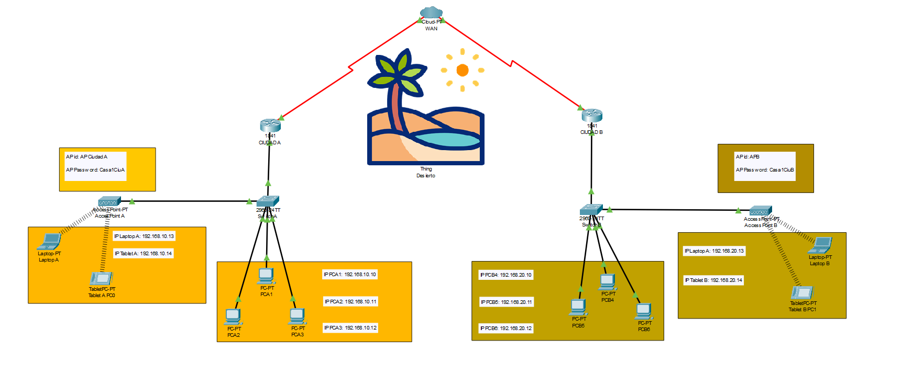
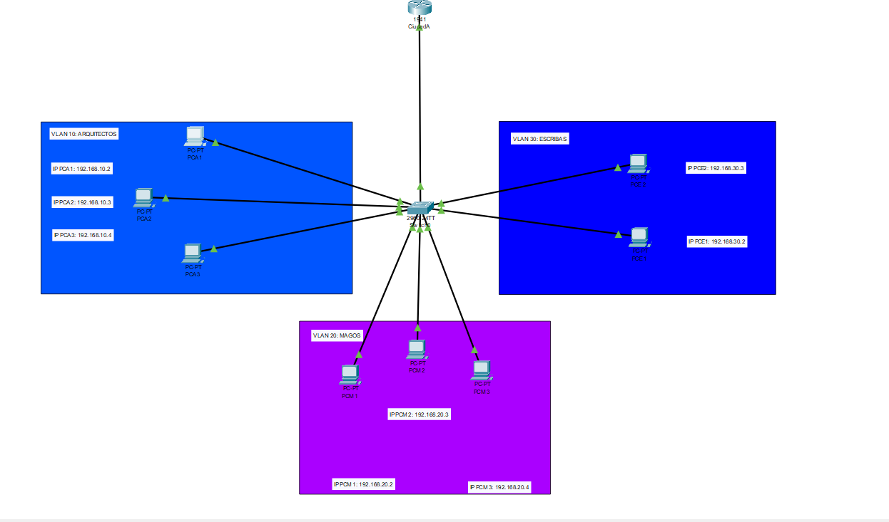
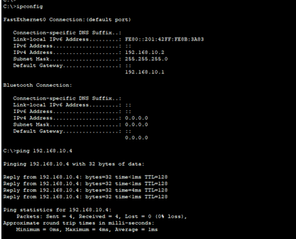
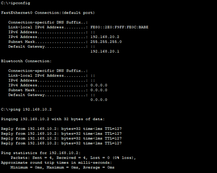

📜 Introducción
Bienvenido, explorador tecnológico. Estás por sumergirte en una aventura narrativa y técnica para demostrar tus conocimientos en redes.
🔍 Parte I: Conceptos y Teoría
Este ejercicio se refiere al modelo OSI. Cada franja representa una de sus capas:
- Capa 7: Aplicación
- Capa 6: Presentación
- Capa 5: Sesión
- Capa 4: Transporte
- Capa 3: Red
- Capa 2: Enlace de datos
- Capa 1: Física
El mensajero confiable representa el protocolo TCP, mientras que el veloz representa UDP. TCP es fiable, orientado a conexión, pero más lento. UDP es más rápido, pero puede perder paquetes.
Dividir 192.168.50.0 en 4 subredes implica usar una máscara /26 (255.255.255.192), que da 64 direcciones por subred, de las cuales 62 son utilizables.
El tótem representa una tabla de enrutamiento. Las flechas fijas son rutas estáticas; las móviles, rutas dinámicas aprendidas por protocolos como OSPF o RIP.
Este guardián simboliza el NAT (Traducción de Direcciones de Red). Permite que varios dispositivos compartan una sola IP pública, ocultando sus direcciones privadas. Beneficios: seguridad y ahorro de direcciones públicas.
🛠 Parte II: Práctica con Cisco Packet Tracer
Documentación Técnica: Reconstrucción de Redes en las Ciudades Perdidas
Introducción: En este ejercicio, restauramos la conexión entre dos ciudades separadas por un desierto, utilizando Cisco Packet Tracer. Configuramos una red que conecta ambas ciudades a través de un enlace WAN, creando una topología robusta usando routers, switches, dispositivos finales y una nube WAN con Frame Relay.
Topología de la Red:
- Router A (Ciudad A) y Router B (Ciudad B) conectados por un enlace WAN
- Switches en cada ciudad para gestionar las redes LAN
- Dispositivos finales (laptops, tablets, PCs) conectados a los switches
- Cloud PT simulando una nube con conexión Frame Relay
Equipos y Enlaces Principales:
- Router A (Cisco 1841):
- FastEthernet0/0: 192.168.10.1/24 (LAN Ciudad A)
- Serial0/1/0: 192.168.30.1/30 (WAN a Router B)
- Ruta estática:
ip route 192.168.20.0 255.255.255.0 192.168.30.2
- Router B (Cisco 1841):
- FastEthernet0/0: 192.168.20.1/24 (LAN Ciudad B)
- Serial0/1/0: 192.168.30.2/30 (WAN a Router A)
- Ruta estática:
ip route 192.168.10.0 255.255.255.0 192.168.30.1
- Cloud PT (Nube WAN): Frame Relay entre ambos routers con DLCIs 100 y 200
Configuración de la Nube WAN: Se configuró Frame Relay con los siguientes comandos:
interface Serial0/1/0 encapsulation frame-relay
Asignación de DLCI:
- Router A: DLCI 100
- Router B: DLCI 200
Configuración de Switches: Cada ciudad tiene un switch configurado con una VLAN:
- Ciudad A: VLAN 10
- Ciudad B: VLAN 20
Las interfaces del switch fueron asignadas como access y vinculadas a sus respectivas VLANs.
Configuración de Dispositivos Finales:
- Ciudad A:
- Laptop A: 192.168.10.13
- Tablet A: 192.168.10.14
- PC A1: 192.168.10.10
- Ciudad B:
- Laptop B: 192.168.20.13
- Tablet B: 192.168.20.14
- PC B4: 192.168.20.10
Verificación de Conectividad: Se realizaron pruebas de ping entre dispositivos de ambas ciudades. Los resultados fueron exitosos, lo que indica que la comunicación entre las dos LAN está funcionando correctamente.
Capturas de Pantalla:
Conclusión: Tras la implementación de la red completa con routers, switches, VLANs y Frame Relay, la conectividad entre Ciudad A y Ciudad B quedó restaurada. La configuración estática y la simulación de WAN fueron efectivas.
Documentación Técnica: Restauración de las Redes de la Ciudad Perdida
Introducción: En este ejercicio, como parte de la misión para restaurar las redes de una antigua ciudad, se configuró una infraestructura de red segmentada utilizando VLANs y un router-on-a-stick. El objetivo era devolver la comunicación entre las diferentes facciones de la ciudad, que estaban aisladas en VLANs distintas. A través de esta reconstrucción, se restableció la conexión entre los gremios de Arquitectos, Escribas y Magos, permitiendo la comunicación entre ellos a través de un router Cisco 1941 y un switch Cisco 2960.
Equipos Utilizados:
- Router Cisco 1941
- Switch Cisco 2960
- PCs Genéricos asignados a diferentes VLANs
VLANs y Subredes:
- VLAN 10 (Arquitectos): 192.168.10.0/24
- VLAN 20 (Escribas): 192.168.20.0/24
- VLAN 30 (Magos): 192.168.30.0/24
Direcciones IP:
- Arquitectos: PC1 (.2), PC2 (.3), PC3 (.4)
- Escribas: PC4 (.2), PC5 (.3), PC6 (.4)
- Magos: PC7 (.2), PC8 (.3)
Router - Subinterfaces:
interface Fa0/0.10
encapsulation dot1Q 10
ip address 192.168.10.1 255.255.255.0
no shutdown
interface Fa0/0.20
encapsulation dot1Q 20
ip address 192.168.20.1 255.255.255.0
no shutdown
interface Fa0/0.30
encapsulation dot1Q 30
ip address 192.168.30.1 255.255.255.0
no shutdown
Switch - Configuración:
vlan 10
name Arquitectos
exit
vlan 20
name Escribas
exit
vlan 30
name Magos
exit
interface range fa0/2 - 4
switchport mode access
switchport access vlan 10
exit
interface range fa0/5 - 7
switchport mode access
switchport access vlan 20
exit
interface range fa0/8 - 9
switchport mode access
switchport access vlan 30
exit
interface fa0/1
switchport mode trunk
exit
Verificación de Conectividad: Se realizaron pings exitosos entre PCs de la misma VLAN y entre VLANs distintas, confirmando la funcionalidad del enrutamiento inter-VLAN.
Capturas de Pantalla:
 Conclusión: La configuración de Router-on-a-Stick fue exitosa. La ciudad digital ha sido restaurada, y los gremios se comunican sin interferencias.
🧾 Recomendaciones y Entrega
Recuerda entregar tu repositorio en GitHub con los archivos .pkt, un README bien documentado y toda la narrativa técnica.